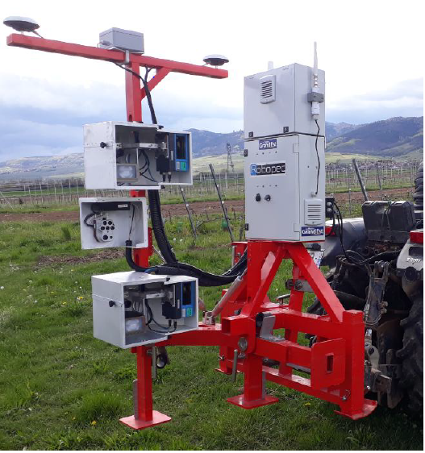

Final-Year Internship — Mechatronics & Control
INRAE, TSCF Research Unit · PhénoVigne project
Challenge: keep a sensor mast, mounted on a vineyard tractor for plant phenotyping, perpendicular to the ground while the tractor drives on sloped, uneven terrain.
- Rebuilt the mast in CATIA V5 and extracted its mass, centre of mass and inertia matrix.
- Used these inertial data to build the MSC Adams dynamic model of the tractor and mast.
- Selected and sized the two electric linear actuators that tilt the mast (stroke, speed, force, space envelope).
- Developed an IMU-based control law in MATLAB/Simulink and validated it in Adams–Simulink co-simulation on demanding slopes.
Result: tilt error below 1°, against a ±2° requirement.
